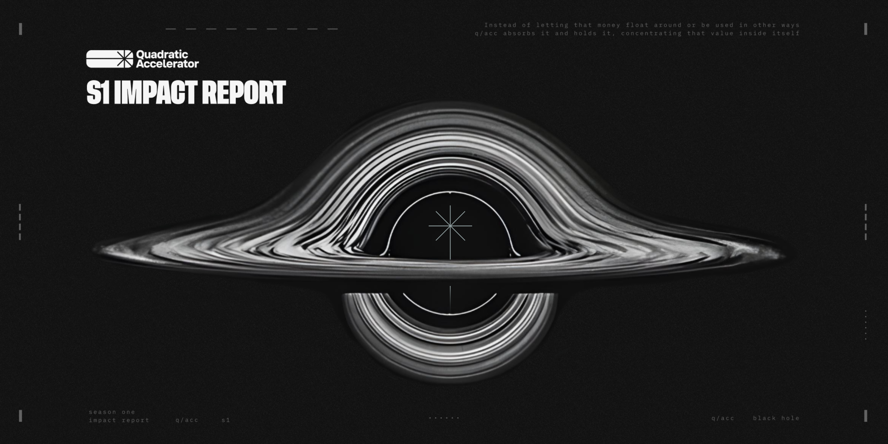
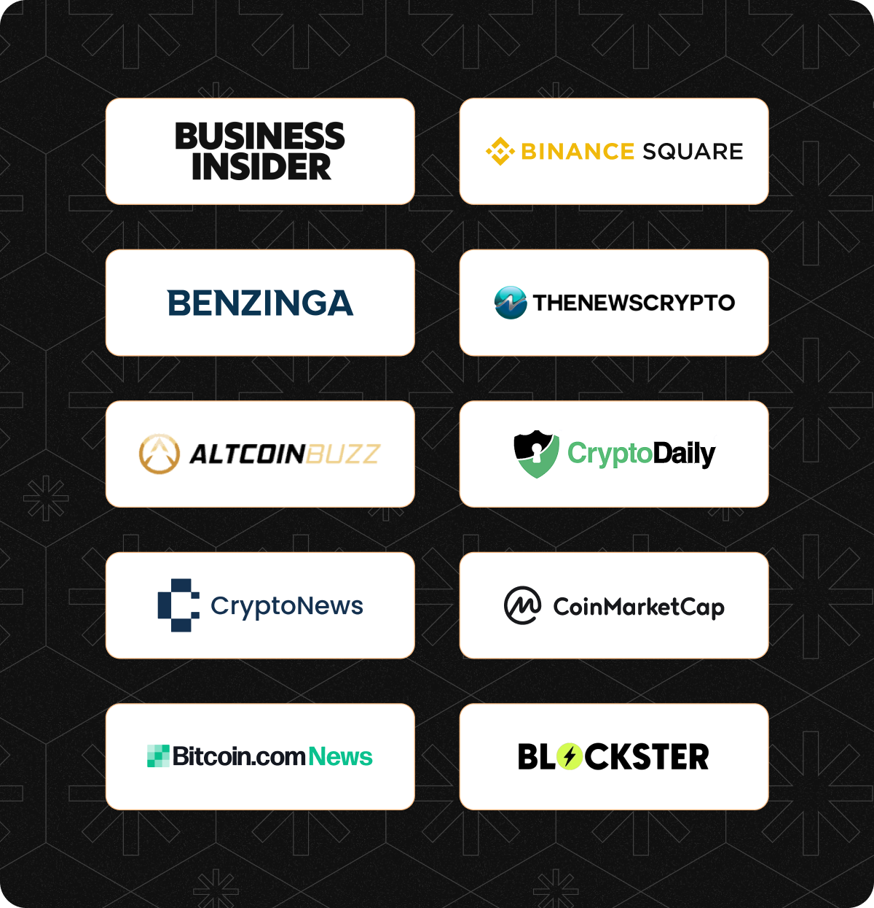
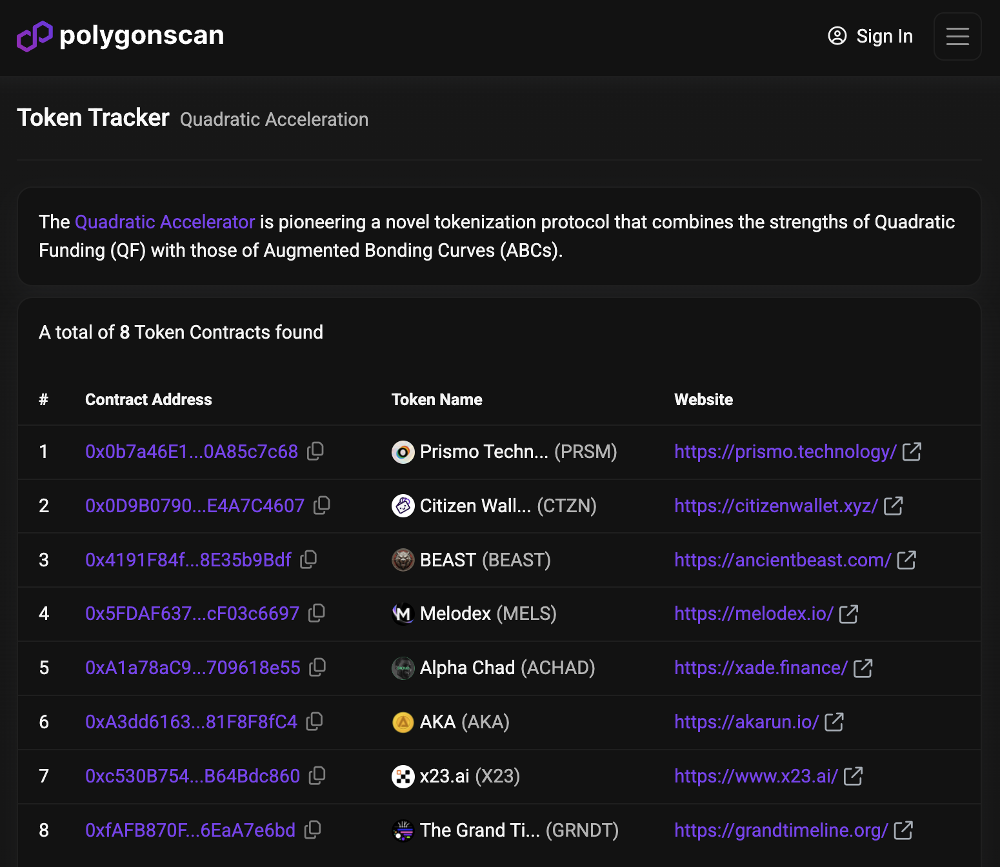
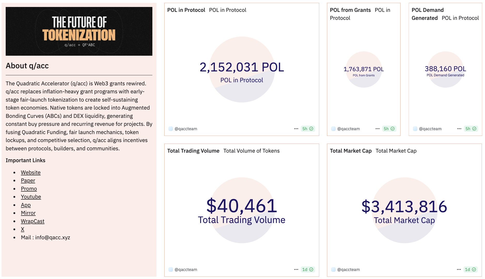
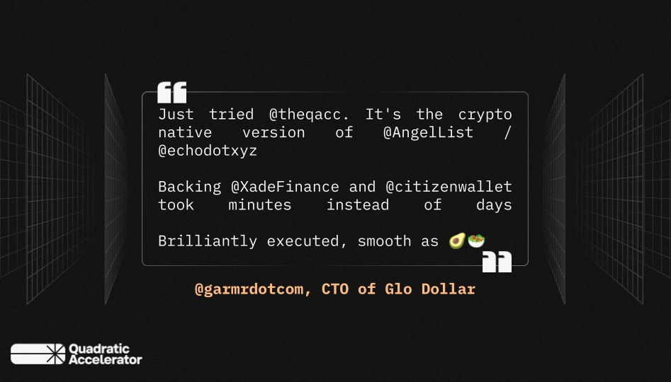

Q/ACC: S1 Impact Report
Originally published at https://paragraph.com/@qacc/q-acc-s1-impact-report

Maiden Voyage
Season 1 of our partnership with Polygon has officially culminated, and we’re proud to share the results. Through the Quadratic Accelerator (q/acc) protocol, we’re pioneering a new mechanism for funding token economies that prioritizes sustainability, Defi-nativity, and stakeholder alignment.
With eight new token economies launched, the seeds of long-term growth have been sown. These projects are now equipped to scale, and we expect their impact to grow in compounding waves over the coming months and years.
Originally chosen as an experimental launchpad for the Polygon zkEVM ecosystem, q/acc’s Season 1 mandate was clear: launch high-potential token economies and bootstrap their communities through public support. Despite navigating a mid-season chain migration, we're pleased to report we delivered.
Our long-term vision is to unlock net new value in capital efficiency, ecosystem loyalty, and community ownership by transforming grants into self-sustaining tokenized economies.

zkEVM Mindshare
The Quadratic Accelerator became a key narrative driver for zkEVM during a pivotal moment in its lifecycle. Beyond onboarding new projects, the program also helped recenter attention on innovation within the Polygon ecosystem.
During Season 1, q/acc was nearly synonymous with zkEVM. A Google search returns over 2,000 media mentions related to the program. This wasn’t our primary goal, but the value of ecosystem-wide visibility was a powerful byproduct.
Highlights:
-
1st Place: People’s Choice Award @ EthDenver: “WTF is Protocol-Sponsored Tokenization?!”
-
Featured in the Onchain Capital Allocation Handbook → https://www.allo.expert/mechanisms/qacc
-
Broad coverage across CoinMarketCap, Altcoin Buzz, Binance, Benzinga, TheNewsCrypto, Crypto Daily, and others

Season 1 Cohort
More than 300 projects applied to Season 1 of q/acc. Notably, 99% of them had no prior plans to launch on Polygon zkEVM. The q/acc value proposition—sustainable tokenization, protocol-backed support, and aligned incentives—won them over.
Eight teams were selected, representing 13 founders building across gaming, AI, DeFi, music, and infrastructure. See the projects:
Akarun is a mobile game where players race custom runners tied to live market assets. The fastest runner is linked to the top-performing asset. It's a Defi prediction market disguised as a game. See: q/acc profile.
Prismo Technology is a layer-2 hybrid public-private blockchain platform designed to enable secure and scalable solutions for enterprises and government organizations, facilitating the transition of traditional technologies to blockchain. See: q/acc profile.
The Grand Timeline is a historical research and data visualization project about the entire history of blockchains and Web3. It will be the first interactive and collectible story of its kind. Stay tuned for the NFT launch and 1:1 wearables. See: q/acc profile.
x23 is automating the future of decentralized organizations by integrating AI tools to streamline the operation and governance of DAOs, making them more efficient and autonomous. It's the DAO delegates' master terminal. See: q/acc profile.
Xade Finance is building the AI-powered Robinhood of DeFi. It is a decentralized platform driven by AI insights and tools that offers a seamless experience for trading and managing digital assets. See: q/acc profile.
Citizen Wallet empowers communities and events with Web3 tools to easily launch, use, and manage community tokens via a mobile app and NFC wallets. See: q/acc profile.
Melodex is a decentralized exchange focused on listing asset-backed music tokens. These tokens represent shares in song royalty rights and enable passive income from music monetization. See: q/acc profile.
Ancient Beast is an open-source, match-based (1v1 or 2v2) eSports strategy game played against other people or AI. It has no chance-based elements and is designed to be easy to learn, fun to play, and hard to master. See: q/acc profile.
Round Results
Unlike traditional grants, q/acc creates net-new value. Funds are not just allocated; they get massively multiplied and supercharged by public demand. It’s incentive alchemy. The POL demand and zkEVM growth are clear. Key Metrics of q/acc on zkEVM:
-
Total Raised: 342,262 $POL
-
Unique contributors: 1,253
-
First-time zkEVM users: ~97%
Migration + DEX Launch
Initially, our post-round DEX listings were scheduled for QuickSwap on zkEVM. However, technical friction and scaling concerns led us to pause listings, migrate the full q/acc stack to Polygon PoS, and resume from there.
As of April 2, 2025:
-
All projects are deployed on PoS and trading on QuickSwap
-
q/acc infra migrated and fully operational on PoS
-
Listings submitted to CoinGecko and DefiLlama integration are pending

https://polygonscan.com/tokens/label/quadratic-acceleration?subcatid=0&size=7&start=0&col=3&order=desc
We’ve also launched our Dune Analytics dashboard, offering a real-time view of:
-
Aggregate token market cap
-
Trading volume
-
Locked POL across bonding curves

https://dune.com/qaccteam/qacc-dashboard
ROI: Return on Grant Expenditure
Let’s compare what was put in vs. what was created:
-
S1 Budget: 1.7M $POL
-
Protocol Locked POL: 2.1M $POL
-
Total Project Market Cap: ~$3.4M (≈ 17M $POL)
-
Cumulative Trading Volume: $40k (in <1 week)
The numbers from Season 1 speak volumes. With just 1.7M $POL in grant capital, the protocol catalyzed over 2.1M $POL in locked liquidity—20% more than was issued—demonstrating q/acc’s ability to generate endogenous demand for the chain’s native asset. The eight launched token economies collectively reached a $3.4M market cap (≈17M $POL), representing a 10x multiplier on the original funding. And with $40k in trading volume within the first week post-launch, early traction suggests strong community interest and room for exponential growth as teams activate utility and distribution.
Conclusion & What’s Next
This is not the end of Season 1—it’s the ignition. These founders now control their own token economies. Their work, their communities, and their momentum determine what comes next.
Meanwhile, we’ve been hard at work refining the q/acc protocol:
-
Frictionless contributor UX
-
Fully migrated infra on Polygon PoS
-
Accelerated program flow
We’re building the future of tokenized entrepreneurship, protocol-native capital formation, and sustainable ecosystem growth.
LFG.!

Originally published on Quadratic Accelerator